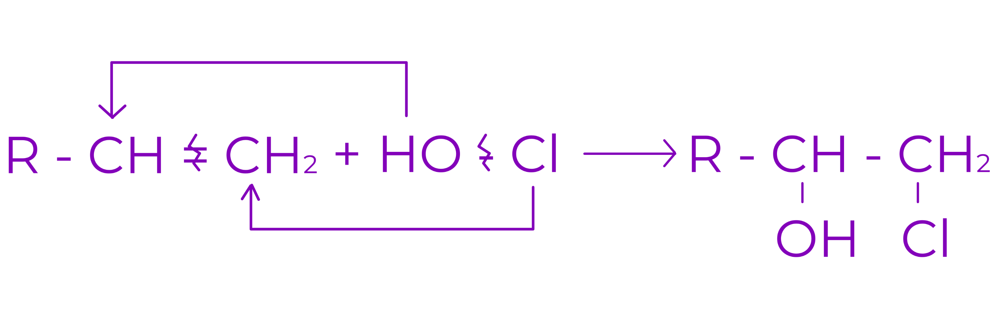
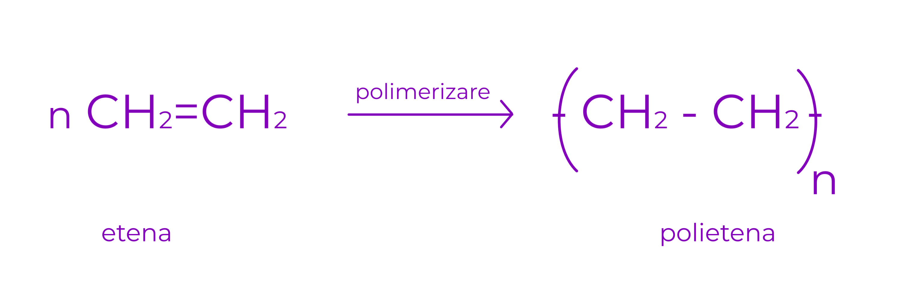

Alchene
1.Definitie:
Alchenele sunt hidrocarburi aciclice, nesaturate
Formula generala: CnH2n
Nesaturarea echivalenta: N.E. = 1
Exemple:

etena
propena

1-butena
cis-2-butena
trans-2-butena
izobutena / 2-metilpropena
2.Denumirea alchenelor:
Daca dam valor lui n in formula generala a alchenelor, obtinem seria lor omoloaga.
Compusii se deosebesc prin inlocuirea sufixului “an” de la alcani cu “ena”
Trebuie sa remarcam ca seria alchenelor incepe de la n=2.
Exemplu:
H2C=CH2 : etena
CH3-CH=CH2 : propena
La alchenele cu mai mult de trei atomi de carbon, se denumeste atomul purtator al dublei legaturi.
CH2=CH-CH2-CH3 : 1-butena
CH3-CH=CH-CH3 : 2-butena
3.Izomeria alchenelor:
Alchenele cu cel putin 4 atomi de carbon in molecula dau urmatoarele tipuri de izomeri:
a. Izomeri de catena:
Exemplu: 1-butena (catena liniara) si 2-metilpropena / izopropena (catena ramificata)
1-butena
2-metilpropena / izobutena
b. Izomeri de pozitie:
Izomerii de pozitie ai alchenelor se deosebesc intre ei prin pozitia dublei legaturi
1-butena
2-butena
c. Izomeri geometrici:
O alchena cu substituenti diferiti la fiecare dintre cei 2 atomi de C participanti la dubla legatura are izomeri geometrici.
cis-2-butena
trans-2-butena
4.Proprietati fizice:
a. Starea de agregare
In conditii standard (25oC si 1 atm)
C 1 - C 4 : gaze
C 5 - C 17 : lichide
> C 17 : solide
b. Punctele de fierbere si de topire
Temperaturile sau punctele de fierbere cresc odata cu crestrea masei molare a alchenei
Sunt putin mai coborate decat ale alcanilor cu acelasi numar de atomi de carbon
Izomerii trans au puncte de topire mai inalte si solubilitati mai scazute decat izomerii cis
Izomerii cis au puncte de fierbere mai inalte si densitate mai mare comparativ cu izomerii trans
c. Densitate
Alchenele au densitati mai mari decat cele ale alcanilor corespunzatori
d. Solubilitate
Sunt insolubile in H2O
Sunt solubile in solventi organici (cloroform, benzen, alcani)
5.Proprietati chimice:
1. Reactia de aditie
Este reactia caracteristica compusilor nesaturati
Intr-o reactie de aditie se rupe legatura π si gradul de nesaturare scade
a. Aditia hidrogenului
Are loc in prezenta de catalizatori metalici (Ni, Pt, Pd). Din reactie se obtin alcani.

Exemplu:
b. Aditia halogenilor
Conduce la derivati dihalogenati vicinali saturati . Reactia are loc cu clor si brom.
Exemplu:
c. Aditia hidracizilor (HCl, HBr)
○ Conduce la derivati monohalogenati saturati
○ In cazul alchenelor nesimetrice aditia are loc conform regulii lui Markovnikov
Regula lui Markovnikov:
La aditia reactantilor nesimetrici la alchene nesimetrice substituentul cel mai voluminos provenit din reactant se leaga de atomul de C cel mai sarac in H.
Exemplu:
HBr se poate aditiona antimarkovnikov la alchenele cu legatura dubla marginala daca reactia are loc in prezenta de peroxizi.
d. Aditia apei
○ are loc in mediu acid
○ conduce la alcool
Exemplu:
e. Aditia acizilor hipohalogenati (HClO, HBrO)
Conduce la halochidrine vicinale

Exemplu:
2. Reactia de substitutie in pozitie alilica
Este reactia alchenelor cu Cl2 sau Br2 la 500oC
Se inlocuieste unul sau mai multi atomi de H de la C alilic cu atomi de halogeni
Carbonul alilic = carbonul saturat, vecin in catena cu un carbon nesaturat
Daca alchena prezinta mai multe pozitii alilice, se vor obtine atatia produsi de reactie monohalogenati cate pozitii alilice prezinta alchena
Exemplu:
3. Reactia de polimerizare
Este o reactie de poliaditie
Dintr-un numar mare de compusi cu masa moleculara mica (monomeri) se obtine un compus cu masa moleculara mare (polimer)
Exemplu:
